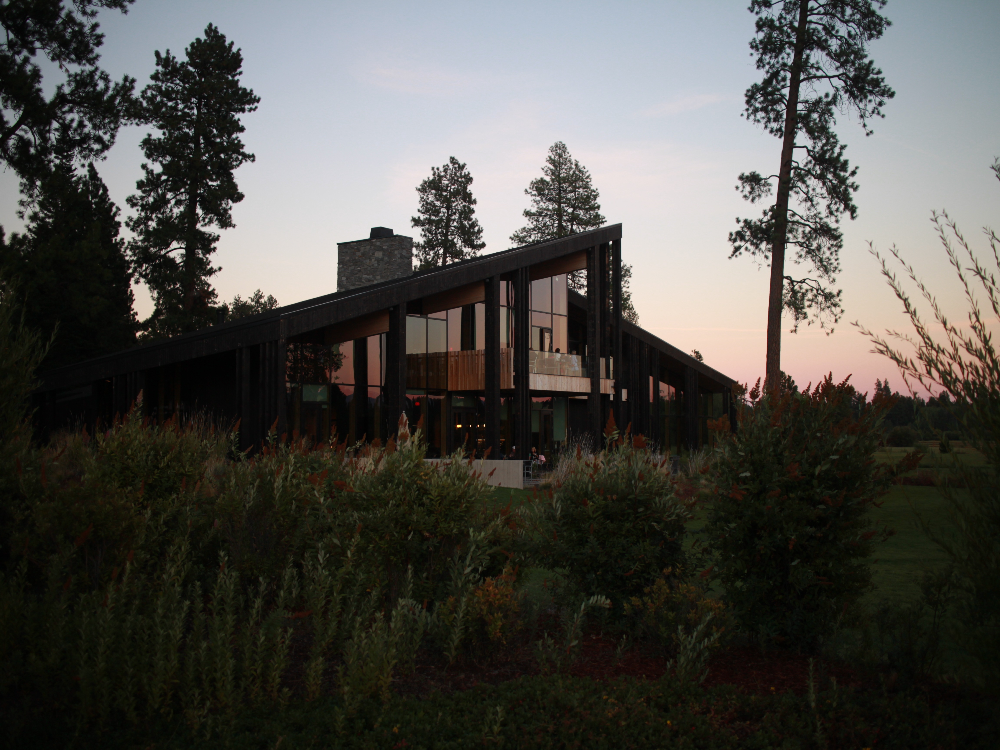
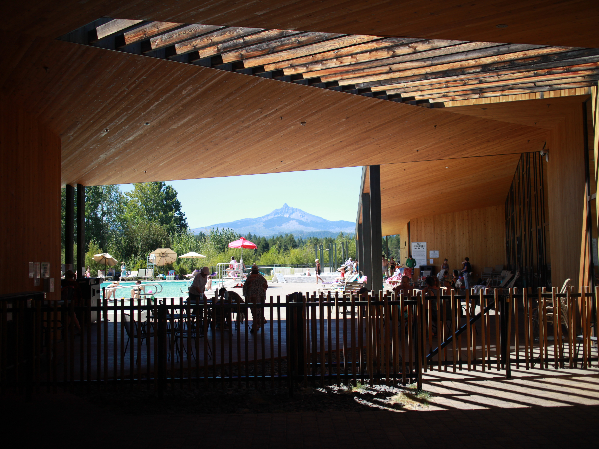
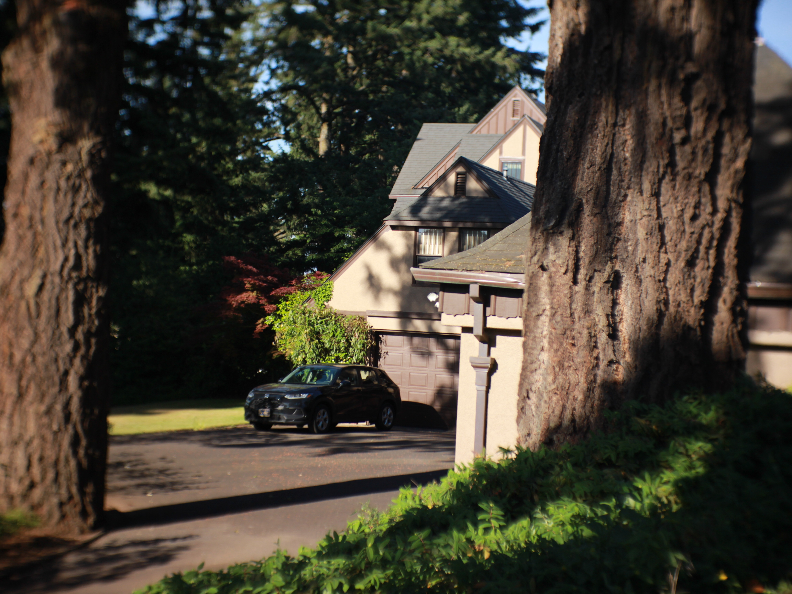
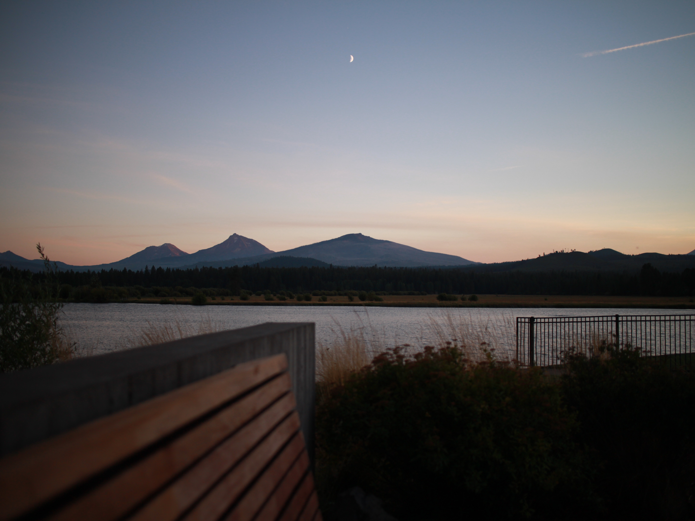

I build tools people actually use.
David WurglerBusiness systems and AISalem, Oregon
Selected work
2025–2026Month-end sales tax3 days → 1 report
ERP kickoff to go-live10 weeks
Warehouse trips gone, per year500+
I don't write most of the code. I write the brief.
Every project starts with a document: who it's for, the rules the agent can't break, and a done test for each step. Then I direct Claude Code through it in pieces small enough to check. Same as the warehouse: decide what good looks like, then make it hard to get wrong.
From firn / CLAUDE.mdWork in small, testable steps.
No new dependencies without asking.
Never weaken a security default.
Each phase ends with a done test.
No new dependencies without asking.
Never weaken a security default.
Each phase ends with a done test.
Off the clock
I sing, write, and produce.
My Brothers And I has songs placed on Virgin River, Pretty Little Liars, Queen Sugar, and others through Secret Road.




Say hi.
Photographed and built by David WurglerBuilt with Claude Code